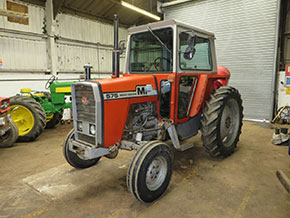

HTML 5 has introduced extra mark-up tags to define the structure of a web page. For example, we used div tags to define the footer page structure such as <div id="footer"> . . . </div>. HTML 5 introduced schematic mark-up tags with meaning and purpose. Some of the schematic HTML 5 elements are header, footer, section, article, aside, nav, figure, figcaption. div tags can be used.
<header> Top of the web page. Can be used inside <article> and <section>. A blog post could be an article element with its own header and footer.
<footer> Bottom of the webpage. Can be used inside <article> and <section>. A blog post could be an article element with its own header and footer.
<nav> Navigation elements.
<article> Define content considered as standalone information such as a comment, blog post, or an item to sell.
<aside> Place inside an article element. The content relates to the article. Can be used outside an article element related to the entire web page.
<section> Group different sections. Examples are news, products, comments, and blogs.
<hgroup> Heading groups. Group together headings <h1> to <h6>. There are headings and subheadings.
<figure> and <figcaption> Figures. Used for images and videos. Figure Caption is the text description of the image.
<div> Section elements. Use when there's no HTML 5 schematic markup used in its place.
htmlshiv code. Used for Internet Explorer browsers below 9. The JavaScript code used to correctly recognize HTML 5. Type in the <head> element
HTML 5 Exercise Layout
<title>The title of the webpage is Antique Tractors - The Olde Tractor Store</title>
Basic Structre
The Olde Tractor Store
Navigation here
First product here
Second product here
Add Text Add Images
The Olde Tractor Store

1979 Massey Ferguson 575
1979 Massey Ferguson 575
£4,500 Plus VAT
1979 Massey Ferguson 2wd Tractor with multi-power, comes with MF leader (not fitted), done 5555 hours, with PUH and 2 double spool valves, overall in reasonable condition for its age.
Fordson Major 6 Cylinder, 90HP
Fordson Major 6 Cylinder, 90HP
£2,650 Plus VAT
This has ahd a Ford 6 cylinder fitted and repainted a while ago. Starts, runs and drives well, very useful to run a grain blower, or other stationery P.T.O. application.
We want to make the schematic markup style as block. Block level elements start on a new line. Block level elements is the basic building structure of the layout. Create the body style with a background image. RM: I commented out the CSS code below; the CSS code is applied in the head tag.
The next style is the wrapper class defining the width of the content and adds a header image. RM: I commented out the CSS code below; the CSS code is applied in the head tag.
The h1 tag is set with text-index of -9999px. The text itself is shifted off the screen to the left for which it's available for text screen readers. The header image tractorheader.jpg displays the same text. RM: I commented out the CSS code below; the CSS code is applied in the head tag. Also, I used an id= to exclude the other h1 tags.
The navigation style is the unordered list <ul> configured as a horizontal list. RM: I commented out the CSS code below; the CSS code is applied in the head tag.
The section and article elements CSS. RM: I commented out the CSS code below; the CSS code is applied in the head tag.
Each article contains a <figure> and <hgroup> elements. CSS. RM: I commented out the CSS code below; the CSS code is applied in the head tag.
The <aside> CSS. RM: I commented out the CSS code below; the CSS code is applied in the head tag.
The final group links, h tags, and footer CSS. RM: I commented out the CSS code below; the CSS code is applied in the head tag.